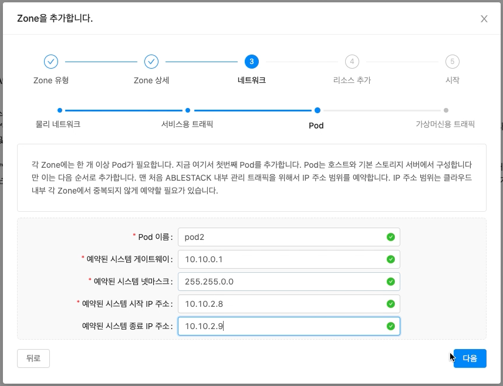

Danger
이 문서는 기술지원 용도의 문서입니다. 기술지원 엔지니어가 아닌 사용자가 조작할 때 시스템에 문제가 발생할 수 있습니다. 해당 설치과정에 사용되는 IP 및 입력 정보는 예시이며, 현장에 맞게 수정하시기 바랍니다.
ABLESTACK Mold 설치진행¶
ABLESTACK Mold 설치 진행 가이드 입니다.
이 문서에서는 ABLESTACK Mold 용 가상머신 생성 및 Mold 웹콘솔을 이용하여 Zone 구성까지 가이드 하고 있습니다.
ABLESTACK Cube 의 웹콘솔과 ABLESTACK Mold 웹콘솔을 이용하여 진행이 되며 웹 접속 IP는 별도의 표시를 하지 않고 진행됩니다.
기존에 구성된 IP 정보에 맞게 웹콘솔을 접속 하시면 됩니다.
클라우드센터 가상머신 배포¶
- 클라우드센터 가상머신을 배포하기 위한 화면입니다. 상단 상태 리본의 클라우드센터 가상머신 배포 링크를 클릭합나다.
-
- 클라우드센터 가상머신 배포 개요 화면입니다. 개요의 내용을 확인 후 다음 버튼을 클릭합니다.
-
- 클라우드센터 가상머신의 컴퓨트 설정하는 화면입니다.
- CPU Core 선택 박스는 8 vCore, Memory 선택 박스는 16 GiB 를 선택 하고 다음 버튼을 클릭합니다.
Tip
클라우드센터 가상머신의 Compute 자원은 클라우드센터가 관리해야 할 호스트의 수에 따라 탄력적으로 선택합니다.
가상머신이 컨트롤 할 호스트의 수가 10개 미만 이면 8 vCore 를, 그 이상 이면 16 vCore 를 선택하십시오.
메모리는 컨트롤할 호스트의 수가 10개 미만이면 16GiB 를, 10 ~ 20개 이면 32GiB 를, 21개 이상 이면 64GiB 를 선택해야 합니다.
ROOT Disk의 크기는 70GiB 를 디스크가 Thin Provisioning 방식으로 제공됩니다. -
- 클라우드센터 가상머신의 네트워크 설정하는 화면입니다.
- 관리네트워크 선택 박스에서 bridge0 을 선택하고 다음 버튼을 클릭합니다.
Info
관리 네트워크와 서비스 네트워크가 분리되여 있는 경우 그리고 외부에서 클라우드센터 웹콘솔에 접근해야 하는경우에는 네트워크 구성 항목에서 서비스네트워크 항목을 체크하신 후에 서비스네트워크 선택 박스에서 해당되는 브릿지 를 선택하셔야 합니다.
-
- 클라우드센터 가상머신 추가 네트워크 정보를 설정하는 화면입니다.
- 클러스터 구성 파일 준비 해당 호스트 파일 사용으로 자동 선택되며, ablecube 호스트 설정 정보를 자동으로 읽어와 클러스터 구성 정보 및 네트워크 IP 정보를 세팅합니다.
- 호스트명(CCVM) 을 입력 및 확인합니다.
- 관리 NIC IP 를 입력 및 확인합니다.
- 관리 NIC Gateway 를 입력 및 확인합니다.
- 관리 NIC DNS 를 입력 및 확인합니다.
Info
클라우드센터 가상머신 배포시 ablecube 호스트에서 설정파일 읽어와 일부 정보를 자동세팅되며 입력 정보를 정확히 확인해야 합니다. 해당 화면의 IP 정보 는 예제 입니다. IP 정보는 사이트 정보에 맞춰서 수정해야 합니다.
-
- SSH Key 정보를 확인하는 화면입니다.
- 클러스터 구성시 호스트에 등록된 호스트의 키 정보로 자동세팅됩니다.
-
- 장애조치 클러스터 설정하는 화면 입니다.
- 호스트 #1정보, 호스트 #2정보, 호스트 #3정보 에는 호스트 PN IP #1, 호스트 PN IP #2, 호스트 PN IP #3 입력하고 다음 버튼을 클릭합니다.
Info
클라우드센터 장애조치 클러스터는 최대 3개의 호스트를 지정할 수 있습니다.
-
설정확인

- 클라우드센터 가상머신 배포전 설정을 확인하는 화면입니다.
- 설정정보를 확인 후 배포 버튼을 클릭 합니다.
-
- 클라우드센터 가상머신 배포 진행상황을 확인 할 수 있는 화면입니다.
-
- 클라우드센터 가상머신 배포가 완료 후 ABLESTACK Cube 웹콘솔에서 클라우드센터 클러스터 상태 카드 항목에서 클러스터 상태 가 Health Ok, 클라우드센터 가상머신 상태 카드에서 가상머신상태 가 Running 인지 확인하셔야 합니다.
클라우드센터 가상머신 웹콘솔 구성¶
클라우드센터 웹콘솔 구성을 하기 위해서는 Bootstrap 우선 실행해야 하며 Bootstrap 실행 후 클라우드센터 웹콘솔 화면을 이용하여 클라우드센터 구성을 하실수 있습니다.
-
- Bootstrap 실행전 화면입니다. 상단의 리본 화면에서 클라우드 센터에 연결할 수 있도록 클라우드센터 VM Bootstrap 실행 작업을 실행하십시오. 문구가 보인다면 클라우드센터 Bootstrap을 실행할 수 있습니다.
-
- Bootstrap 실행 화면입니다. 클라우드센터 클러스터 상태 카드에서 메뉴버튼을 클릭하여 Bootstrap 실행 버튼을 클릭합니다.
- 실행 버튼을 클릭하여 Bootstrap을 실행합니다.
Important
Bootstrap 은 1개의 호스트에서만 실행 됩니다. 1번 호스트에서 실행이 된경우에는 2번, 3번 호스트에서는 Bootstrap 실행 버튼이 사라지게 됩니다.
-
- Bootstrap 실행 후 완료 화면입니다.
- 상단 리본 화면에서 스토리지센터 대시보드 연결, 클라우드센터 연결, 모니터링센터 구성 링크가 보인다면 정상적으로 실행된 상태 입니다.
- 클라우드센터 연결 링크를 클릭하여 클라우드센터 웹콘솔에 접속 하실 수 있습나다.
클라우드센터 Zone 구성¶
클라우드센터 웹콘솔을 이용한 Zone 구성 진행 절차에 대하여 가이드하고 있습니다.
해당 문서에서는 Zone 구성까지만 설명을 하고 있으며 Zone 구성 이후의 클라우드센터 웹콘솔 사용방법은 다른 문서를 참고하시기 바랍니다.
- Bootstrap 실행 완료 후 상단의 리본 창에서 클라우드센터 연결 링크를 클릭합니다.
Info
"클라우드센터에 정상적으로 연결되지 않습니다. 클라우드센터 서비스 상태를 확인하거나, 잠시 후에 다시 시도해주십시오." 문구가 나타나면
-
- 클라우드 센터 로그인 화면입니다.
- 사용자 이름 에는 admin, 비밀번호 는 password 를 입력하고 로그인 버튼을 클릭하면 접속할 수 있습니다.
-
- 관리자 계정의 비밀번호를 변경하는 화면입니다. 설치 계속 버튼을 클릭하면 나오는 창이며 새 비밀번호, 비밀번호 확인 입력 에 동일한 비밀번호를 입력 후 확인 버튼을 클릭합니다.
-
- Zone 의 유형을 선택하는 화면입니다.
- 확장 을 선택한 후에 다음 버튼을 클릭합니다．
-
- Zone 에 대한 정보를 입력하는 화면 입니다.
- 이름 에는 Zone 을 입력합니다.
- IPv4 DNS1 에는 8.8.8.8 을 입력합니다.
- 내부 DNS 1 에는 8.8.8.8 을 입력합니다.
- 하이퍼바이저 선택 박스는 KVM 을 선택합니다.
- 입력 정보 확인 후에 다음 버튼을 클릭 합니다.
-
- Zone 의 네트워크 정보를 입력하는 화면입니다.

- 트래픽 유형 의 MANAGEMENT, GUEST, PUBLIC 각각의 편집 버튼을 클릭하여 트래픽 라벨 항목에 bridge0 을 입력합니다.
- 입력한 정보를 확인 후 다음 버튼을 클릭합니다.
- Zone 의 네트워크 정보를 입력하는 화면입니다.
-
- Zone 의 서비스용 네트워크 정보를 입력 하는 화면입니다.
- 케이트웨이 항목에는 10.10.0.1, 넷마스크 항목에는 255.255.0.0, 시작 IP 주소 항목에는 10.10.2.21, 종료 IP 주소 항목에는 10.10.2.254**을 입력하고 **추가 버튼을 클릭합니다.
- 입력한 정보를 확인 후 다음 버튼을 클릭합니다.
-
클라우드센터 Pod 네트워크 정보 
- Pod 네트워크 정보를 입력하는 화면 입니다.
- Pod 이름 항목에는 pod 를 입력합니다.
- 예약된 시스템 게이트웨이 항목에는 10.10.0.1 을 입력합니다.
- 예약된 시스템 넷마스크 항목에는 255.255.0.0 을 입력합니다.
- 예약된 시스템 시작 IP 주소 항목에는 10.10.2.8 을 입력합니다.
- 예약된 시스템 종료 IP 주소 항목에는 10.10.2.9 을 입력합니다.
- 입력한 정보를 확인 후 다음 버튼을 클릭합니다.
-
- 가상머신용 네트워크 정보를 입력하는 화면입니다.
- VLAN 범위 에 151, 200 을 입력합니다.
- 입력한 정보를 확인 후 다음 버튼을 클릭합니다.
-
- 클라우드센터 클러스터 정보를 입력하는 화면입니다.
- 클러스터 이름 항목에 cluster 를 입력합니다.
- 입력한 정보를 확인 후 다음 버튼을 클릭합니다.
-
- 클라우드센터에 호스트를 추가하는 화면 입니다.
- 호스트 이름 항목에는 10.10.2.1 을 입력합니다.
- 사용자 이름 항목에는 root 를 입력합니다.
- 비밀번호 항목에는 비밀번호 를 입력합니다.
- 태그 항목에는 ablecube1 을 입력합니다.
- 입력한 정보를 확인 후 다음 버튼을 클릭합니다.
-
- 기본 스토리지 추가하는 화면입니다.
- 이름 항목에는 ps 를 입력합니다.
- 범위 선택 박스에는 zone 을 선택합니다.
- 프로토콜 선택 박스에는 Glue Block 를 선택합니다.
- Glue Block 모니터 항목에는 scvm1,scvm2,scvm3을 입력합니다.(띄어쓰기 없음)
- Glue Block 풀 항목에는 rbd 를 입력합니다.
- Glue Block 사용자 항목에는 admin 을 입력합니다.
- Glue Block 시크릿 항목에는 client.admin의 key값 을 입력합니다.
- Glue Block 경로 항목에는 /dev/rbd 를 입력합니다.
- 제공자 선택 박스에는 ABLESTACK 을 선택합니다.
- 입력한 정보를 확인 후 다음 버튼을 클릭합니다.
-
- 2차 스토리지를 추가하는 화면입니다.
- 제공자 선택 박스에서 NFS 를 선택 합니다.
- 이름 항목에는 ss 를 입력합니다.
- 서버 항목에는 10.10.2.10 (ccvm mngt ip) 를 입력합니다.
- 경로 항목에는 secondary 를 입력합니다.
- 입력한 정보를 확인 후 다음 버튼을 클릭합니다.
-
- zone 추가 중 화면 입니다.
-
- 클라우드센터 ablecube2 호스트를 추가하는 화면 입니다.
- Zone 이름 항목에는 Zone 을 선택합니다.
- Pod 이름 항목에는 Pod 을 선택합니다.
- 클러스터 항목에는 Cluster 를 선택합니다.
- 호스트 이름 항목에는 ablecloud2 를 입력합니다.
- 사용자 이름 항목에는 root 를 입력합니다.
- 비밀번호 항목에는 비밀번호 를 입력합니다.
- 호스트 태그 항목에는 ablecube2 를 입력합니다.
- 입력한 정보를 확인 후 다음 버튼을 클릭합니다.
-
- 클라우드센터 ablecube3 호스트를 추가하는 화면 입니다.
- Zone 이름 항목에는 Zone 을 선택합니다.
- Pod 이름 항목에는 Pod 을 선택합니다.
- 클러스터 항목에는 Cluster 를 선택합니다.
- 호스트 이름 항목에는 ablecloud3 를 입력합니다.
- 사용자 이름 항목에는 root 를 입력합니다.
- 비밀번호 항목에는 비밀번호 를 입력합니다.
- 호스트 태그 항목에는 ablecube3 를 입력합니다.
- 입력한 정보를 확인 후 다음 버튼을 클릭합니다.
-
호스트 고정 메모리 할당
Info
ABLESTACK구성 시 필요한 최소 3식의 x86 호스트 서버가 준비되어 있어야 하며, 스토리지센터 가상머신은 각 호스트당 1대씩, 클라우드센터 가상머신은 총 1대입니다.
스토리지센터 가상머신과 클라우드센터 가상머신의 성능 안정화를 위해 스토리지센터 가상머신(최소 32GB) + 클라우드센터 가상머신(최소 16GB) + 여유 용량 (A) 가 필요합니다.

{kind=link}
{kind=link}
{kind=link}
{kind=link}
{kind=link}
{kind=link}
{kind=link}
{kind=link}
{kind=link}
{kind=link}
{kind=link}
{kind=link}
{kind=link}
{kind=link}
{kind=link}
{kind=link}
{kind=link}
{kind=link}
{kind=link}
{kind=link}
{kind=link}
{kind=link}
{kind=link}
{kind=link}
{kind=link}
{kind=link}
{kind=link}
{kind=link}
{kind=link}
{kind=link}
{kind=link}